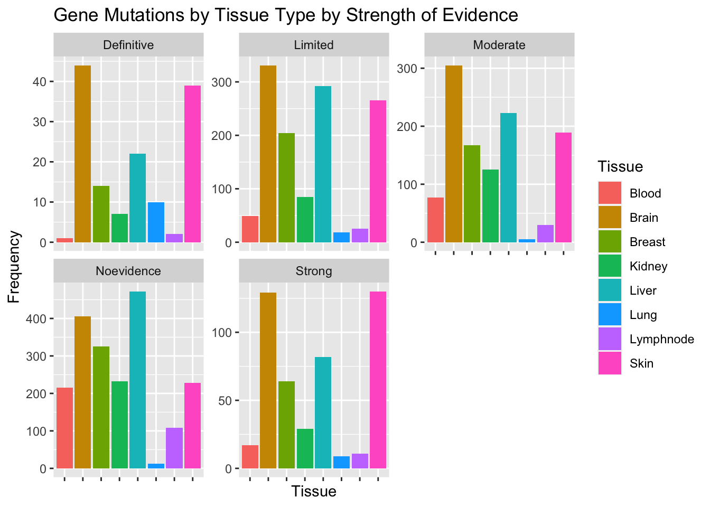

gene data viz
Marcus Minko
4/19/2022
#The goal is to look at the distribution of tissue types with gene mutations #data: gene mutations
library(tidyverse)## ── Attaching packages ─────────────────────────────────────── tidyverse 1.3.1 ──## ✓ ggplot2 3.3.5 ✓ purrr 0.3.4
## ✓ tibble 3.1.6 ✓ dplyr 1.0.8
## ✓ tidyr 1.2.0 ✓ stringr 1.4.0
## ✓ readr 2.1.2 ✓ forcats 0.5.1## ── Conflicts ────────────────────────────────────────── tidyverse_conflicts() ──
## x dplyr::filter() masks stats::filter()
## x dplyr::lag() masks stats::lag()library(readr)
gene <- read_csv("gene.csv")## Rows: 5000 Columns: 11## ── Column specification ────────────────────────────────────────────────────────
## Delimiter: ","
## chr (4): Gene, Pathway, Tissue, GDR
## dbl (7): Mutation, D1, D2, D3, D4, D5, D6
##
## ℹ Use `spec()` to retrieve the full column specification for this data.
## ℹ Specify the column types or set `show_col_types = FALSE` to quiet this message.glimpse(gene)## Rows: 5,000
## Columns: 11
## $ Gene <chr> "G1894", "G19755", "G53579", "G34857", "G34526", "G7888", "G5…
## $ Pathway <chr> "Pathway2", "Pathway4", "Pathway2", "Pathway4", "Pathway4", "…
## $ Tissue <chr> "Brain", "Liver", "Brain", "Kidney", "Blood", "Skin", "Skin",…
## $ GDR <chr> "Moderate", "Noevidence", "Definitive", "Noevidence", "Noevid…
## $ Mutation <dbl> 3077, 8321, 2697, 878, 868, 4311, 2342, 8246, 731, 1229, 935,…
## $ D1 <dbl> 0.79, 1.20, 0.70, 0.30, 0.33, 1.00, 0.70, 1.00, 0.30, 0.53, 0…
## $ D2 <dbl> 5.97, 6.85, 5.61, 4.32, 4.42, 6.38, 5.65, 6.34, 4.28, 5.23, 4…
## $ D3 <dbl> 3.61, 4.11, 3.60, 2.69, 2.70, 3.89, 3.48, 3.98, 2.72, 3.21, 3…
## $ D4 <dbl> 5.99, 6.88, 5.57, 4.26, 4.46, 6.44, 5.61, 6.44, 4.26, 5.26, 5…
## $ D5 <dbl> 60.4, 59.9, 64.4, 62.7, 60.8, 60.7, 61.8, 62.3, 63.7, 61.2, 6…
## $ D6 <dbl> 59, 61, 53, 57, 56, 59, 60, 55, 56, 55, 55, 55, 59, 59, 56, 5…summary(gene)## Gene Pathway Tissue GDR
## Length:5000 Length:5000 Length:5000 Length:5000
## Class :character Class :character Class :character Class :character
## Mode :character Mode :character Mode :character Mode :character
##
##
##
## Mutation D1 D2 D3
## Min. : 345 Min. :0.2000 Min. : 3.730 Min. :1.070
## 1st Qu.: 945 1st Qu.:0.4000 1st Qu.: 4.710 1st Qu.:2.910
## Median : 2402 Median :0.7000 Median : 5.690 Median :3.520
## Mean : 3902 Mean :0.7927 Mean : 5.718 Mean :3.532
## 3rd Qu.: 5158 3rd Qu.:1.0400 3rd Qu.: 6.530 3rd Qu.:4.030
## Max. :18823 Max. :4.0100 Max. :10.140 Max. :6.170
## D4 D5 D6
## Min. : 3.680 Min. :53.20 Min. :44.0
## 1st Qu.: 4.720 1st Qu.:61.10 1st Qu.:56.0
## Median : 5.700 Median :61.90 Median :57.0
## Mean : 5.719 Mean :61.78 Mean :57.4
## 3rd Qu.: 6.530 3rd Qu.:62.50 3rd Qu.:59.0
## Max. :10.100 Max. :69.30 Max. :79.0#Plot of the frequency of tissue types
gene %>%
ggplot(aes(x = Tissue, fill = Tissue)) + geom_bar() + labs(title = "Gene Mutations by Tissue Type", x = "Tissue", y = "Frequency")
#Comparison of these distributions faceted by evidence type
gene %>%
ggplot(aes(x = Tissue, fill = Tissue)) +
geom_bar() +
facet_wrap(~GDR, scales = "free_y") +
theme(axis.text.x=element_blank()) +
labs(title = "Gene Mutations by Tissue Type by Strength of Evidence",
y = "Frequency")
#This reveal some interesting differences. In the definitive evidence category, there are very few blood-related genes but disproportionately significant amount of lung-related genes. This is inversely reflected in the "no evidence" category.